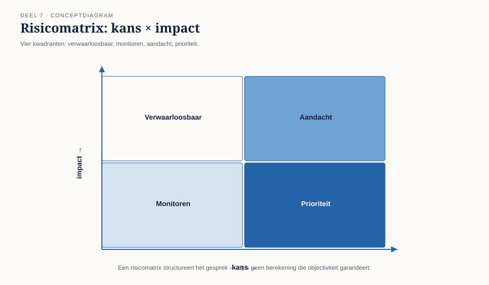
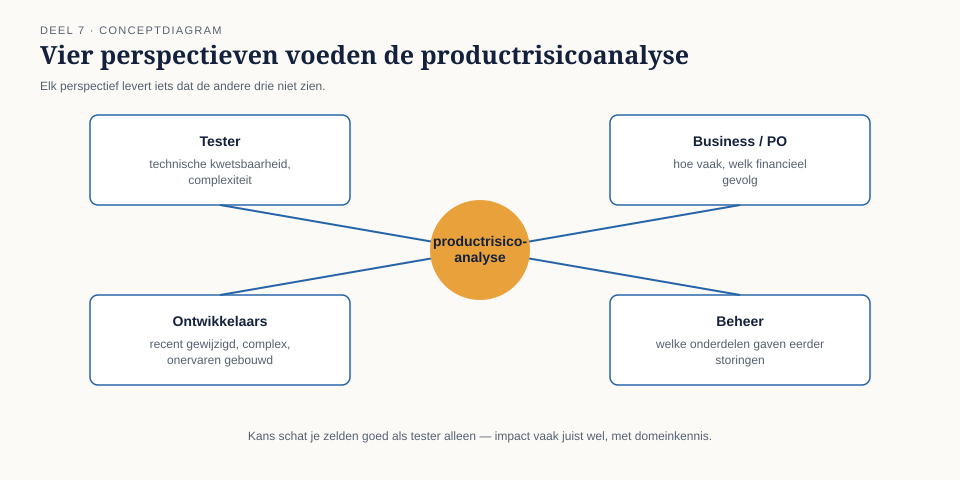
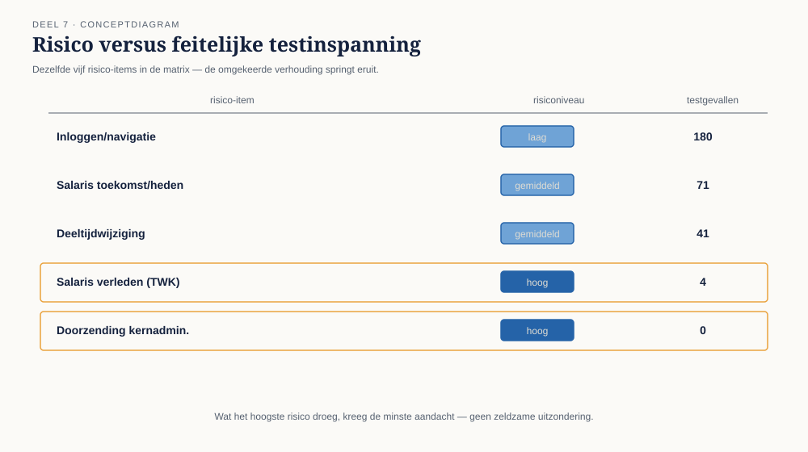

Cursus Testen en Kwaliteitsborging · Niveau 1 (ISTQB CTFL) · Deel 7 van 30
Risicogebaseerd testen
180 van de 312 testgevallen van WGP 2.0 gingen over inloggen en navigatie; salarismutaties met terugwerkende kracht — de fout die het systeem uiteindelijk deed struikelen — kregen er vier. Niemand besloot dat bewust. In dit deel leert u waarom testinspanning zich zonder expliciete keuze naar gemak in plaats van naar risico verdeelt, en hoe u een productrisicoanalyse gebruikt om dat om te draaien.
7secties
±1,5uleestijd + werkboek
6controlevragen
T2bevinding gesloten
Positionering. Deze cursus is een voorbereiding op het examen ISTQB Certified Tester Foundation Level (CTFL) en uitdrukkelijk geen vervanging van het officiële ISTQB-syllabusmateriaal, te raadplegen via istqb.org. Alle formuleringen, figuren en werkvormen in dit materiaal zijn van Ductus; studeer voor het examen altijd óók de officiële bron.
Niveau 1: ➊ Waarom getest wordt → ➋ Het testproces → ➌ Testen in de levenscyclus → ➍ Statisch testen → ➎ Black-boxtechnieken → ➏ White-box en ervaringsgebaseerd testen → ➐ Risicogebaseerd testen (hier) → ➑ Uitvoeren en bevindingen → ➒ Rapporteren en gereedschap → ➓ Examentraining + capstone
01
180 tegen 4
⏱ 12 min
Na dit deel kunt u een productrisico van een projectrisico onderscheiden, risico's inschatten op kans en impact — en de grenzen van die inschatting benoemen — en een productrisicoanalyse uitvoeren die resultaten vertaalt naar een teststrategie. U kunt exitcriteria formuleren die een besluit ondersteunen in plaats van een percentage na te jagen, en uitleggen waarom risico-inschatting een herhaalde activiteit is, geen eenmalige.
Toen Iris de 312 testgevallen van WGP 2.0 categoriseerde naar functioneel gebied, ontstond een tabel die zij later aan iedereen liet zien die het wilde weten — en aan een paar mensen die het niet wilden weten.
Figuur 7-1 — Staafdiagram van de testgevallenverdeling, met de vier terugwerkende-krachtgevallen nauwelijks zichtbaar naast de 180 gevallen over inloggen en navigatie.
Niemand had ooit besloten dat terugwerkende kracht onbelangrijk was. Sterker nog: had je het aan wie dan ook bij Meridiaan gevraagd, dan had iedereen — Marijke, Jelle, Rob — onmiddellijk gezegd dat een fout in de geldstroom van een pensioenaanspraak ernstiger is dan een fout in het menu. De verdeling van de testgevallen ontstond niet uit een besluit. Zij ontstond uit hoe makkelijk elk gebied is om een testgeval voor te bedenken: inloggen is voor iedereen voorstelbaar, terugwerkende kracht met een correcte berekening vergt domeinkennis en denkwerk.
Kernzin
Bij afwezigheid van een expliciete keuze, kiest de makkelijkste weg vanzelf waar de aandacht naartoe gaat. Risicogebaseerd testen is het instrument om die keuze bewust te maken.
Dit is bevinding T2.
02
Wat een risico is, en wat niet
⏱ 18 min
Productrisico versus projectrisico
Een productrisico is de kans dat het systeem zelf een probleem veroorzaakt: een fout in de berekening, een onveilige koppeling, een onbruikbaar scherm. Dit is waar testen zich primair op richt.
Een projectrisico is de kans dat het project zijn doel niet haalt: een vertraagde levering, een vertrekkende sleutelfiguur, een budgetoverschrijding. Dit raakt testen indirect (een uitgelopen project knijpt vaak in de testperiode, zoals bij WGP 2.0 gebeurde) maar is een ander soort risico met een ander soort eigenaar.
Kans maal impact — en de grenzen daarvan
De klassieke formule: risico = kans × impact. Hoe waarschijnlijk is het dat iets misgaat, en hoe erg is het als het misgaat?

Figuur 7-2 — Een risicomatrix met kans op de ene as, impact op de andere, en vier kwadranten: verwaarloosbaar, monitoren, aandacht, prioriteit.
Twee waarschuwingen die precies zo hard gelden als bij WGP 2.0 golden. Eerste: een risicomatrix oogt bedrieglijk precies. Kans en impact worden zelden echt gemeten; ze worden geschat, vaak op een schaal van laag/gemiddeld/hoog die vervolgens wordt vermenigvuldigd alsof het harde getallen zijn. Het is een hulpmiddel om een gesprek te structureren, geen berekening die objectiviteit garandeert. Tweede: kans is voor een tester zelden goed te schatten, impact meestal wel. Iris kan met domeinkennis inschatten wát een fout in de terugwerkende-krachtverwerking betekent — maar hoe vaak een deeltijdwijziging middenin de maand voorkomt, weet zij niet uit zichzelf. Dat cijfer haal je op bij de business, niet uit de losse pols.
Wie levert wat aan de risico-inschatting
Risicogebaseerd testen is nooit een activiteit die de tester alleen uitvoert. Effectieve inbreng: de tester brengt technische kwetsbaarheid en ervaring met vergelijkbare afwijkingen; de business/product owner weet hoe vaak iets voorkomt en wat het financiële en reputatiegevolg is; ontwikkelaars weten welke onderdelen recent gewijzigd, complex of door onervaren mensen gebouwd zijn (principe 4, clustering); beheer weet welke onderdelen eerder productieverstoringen gaven.

Figuur 7-3 — Vier perspectieven die samen een productrisicoanalyse voeden, met een pijl naar het gezamenlijke resultaat.
Controlevragen
Uit Werkboek deel 7, Opdracht 7.1 en Oefentoets vraag 4
1Categoriseer als productrisico (PR) of projectrisico (PJ): (b) een deeltijdwijziging middenin de maand wordt verkeerd berekend; (c) de testperiode wordt van drie weken naar één week teruggebracht omdat de bouw is uitgelopen; (e) het budget voor de acceptatietest is voor 80% besteed bij de helft van de geplande testperiode.Toon antwoord
(b) PR. (c) PJ, met een direct doorwerkend effect op wat er aan producttesten nog mogelijk is — een goed voorbeeld van hoe een projectrisico een productrisico vergroot. (e) PJ. Bij (c) is de link tussen beide categorieën het leermoment: een projectrisico "veroorzaakt" geen productrisico automatisch, maar knijpt wel de ruimte om productrisico's te ontdekken — precies wat bij WGP 2.0 gebeurde, waar de acceptatietestperiode van drie weken zelf al een compromis was.
2Wat is het risico van een risicomatrix die kans en impact vermenigvuldigt op een schaal laag/gemiddeld/hoog?Toon antwoord
Zij oogt preciezer dan de onderliggende schattingen rechtvaardigen. Kans en impact zijn geschat, geen harde getallen; de matrix is een hulpmiddel om een gesprek te structureren, geen berekening die objectiviteit garandeert.
03
Productrisicoanalyse uitvoeren
⏱ 16 min
Vier stappen: identificeer risico-items — de functionele en niet-functionele gebieden die apart beoordeeld worden; beoordeel elk item op kans en impact, met de vier perspectieven uit sectie 2; prioriteer — orden de items van hoogste naar laagste risico; vertaal naar teststrategie — hoeveel diepgang, welke technieken (deel 5 en 6), welk testniveau, hoe vroeg.
Toegepast op WGP 2.0, achteraf gereconstrueerd:
Risico-item
Kans
Impact
Risico
Feitelijke testinspanning
Inloggen en navigatie
laag
laag
laag
180 testgevallen
Salariswijziging, toekomst/heden
gemiddeld
gemiddeld
gemiddeld
71 testgevallen
Deeltijdwijziging
gemiddeld
gemiddeld
gemiddeld
41 testgevallen
Salariswijziging, verleden (terugwerkend)
hoog
hoog
hoog
4 testgevallen
Doorzending naar kernadministratie
gemiddeld
hoog
hoog
0 testgevallen (T7)

Figuur 7-4 — Dezelfde vijf risico-items geplot in de risicomatrix, met de feitelijke testinspanning ernaast — de omgekeerde verhouding springt eruit.
De omkering is compleet: wat het hoogste risico droeg, kreeg de minste aandacht. Dat is geen zeldzame uitzondering — het is wat er gebeurt wanneer risico-inschatting achterwege blijft en de testinspanning zich naar gemak in plaats van naar risico verdeelt.
Vuistregels om te vertalen naar teststrategie: hoog risico → diepgaande technieken (beslissingstabellen, driepuntsgrenzen, white-box waar relevant), vroeg in de levenscyclus, met de meest ervaren testcapaciteit. Gemiddeld risico → standaard technieken, normale diepgang. Laag risico → lichte steekproef, eventueel exploratory in plaats van uitgeschreven testgevallen, of bewust achterwege gelaten met vermelding van die keuze.
Kernzin
Risicogebaseerd testen betekent niet dat laag-risicogebieden nooit worden getest. Het betekent dat de keuze om ze licht te testen — of niet — een besluit is, geen toeval.
Controlevragen
Uit Werkboek deel 7, Opdracht 7.2 en 7.4
1Was een productrisicoanalyse van de vijf items uit deze sectie — vóóraf, zonder kennis van de afloop — te doen geweest binnen een uur overleg met Marijke, Jelle en Astrid?Toon antwoord
Ja — dat is de kern van de les. Niets in deze analyse vereist kennis achteraf. Elk perspectief (tester, business, ontwikkelaar, beheer) had dit vooraf kunnen inbrengen. Het ontbrak niet aan kennis maar aan een moment waarop die kennis werd samengebracht.
2Voor het risico-item met het hoogste risico (terugwerkende salarismutatie of doorzending): welke techniek(en) uit deel 5 en 6 past het beste, en met welke diepgang?Toon antwoord
Het sterkste antwoord is een combinatie: een beslissingstabel voor de combinaties van conditie, driepuntsgrenzen op elke datumgrens, én een gerichte white-box-controle of de foutafhandeling van een mislukte doorzending daadwerkelijk gericht is getest — niet alleen "toevallig aangeraakt". Voor het laagste-risico-item (inloggen/navigatie) volstaat een lichte equivalentieklassenanalyse of een korte exploratory-sessie. Risico bepaalt niet alleen hoevéél je test, maar ook welke techniek en met welke diepgang.
04
Exitcriteria en herhaalde inschatting
⏱ 14 min
Bevinding T8 (deel 9 sluit haar volledig) begint hier al zichtbaar te worden: het exitcriterium van WGP 2.0 was "≥95% geslaagd, geen open bevinding met prioriteit hoog". Zo'n criterium is haalbaar zonder ooit het juiste te hebben getest — de 306 van 312 geslaagde testgevallen zeggen niets over de vier terugwerkende-krachtgevallen die er niet bij zaten.
In plaats van een enkel percentage, formuleer je exitcriteria per risiconiveau:
Risiconiveau
Voorbeeld exitcriterium
Hoog
Alle geïdentificeerde risico-items zijn getest met minimaal beslissingsdekking; geen openstaande bevinding, ongeacht prioriteit
Gemiddeld
Kernscenario's en grenswaarden zijn getest; geen openstaande bevinding met prioriteit hoog of kritiek
Laag
Steekproefsgewijs getest of bewust overgeslagen, met expliciete vermelding in het testrapport
Dit maakt vanzelf zichtbaar wat wél en wat niet is onderzocht, per risiconiveau — precies de informatie die een besluitvormer nodig heeft.
Een productrisicoanalyse die bij de start van een project wordt gemaakt en daarna nooit wordt herzien, veroudert net zo geruisloos als een testbasis (T3, deel 3). Nieuwe informatie — een gevonden cluster afwijkingen, een gewijzigde scope, een productie-incident elders — hoort de inschatting bij te stellen. Bij Meridiaan is dit een structureel aandachtspunt: de kennis dat terugwerkende kracht een hoog risico droeg, bestond feitelijk al bij iedereen maar was nooit vastgelegd in een vorm die het testwerk kon sturen. Risicogebaseerd testen is dus niet in de eerste plaats een nieuwe vaardigheid maar een discipline om bestaande kennis expliciet en bruikbaar te maken.
Controlevragen
Uit Werkboek deel 7, Opdracht 7.3 en Oefentoets vraag 7
1Herschrijf het oorspronkelijke exitcriterium "minimaal 95% geslaagd en geen open bevinding met prioriteit hoog" naar een risicogebaseerd exitcriterium voor WGP 2.0.Toon antwoord
Hoog risico (terugwerkende salarismutaties, doorzending naar kernadministratie): alle testcondities uit de beslissingstabel zijn getest, inclusief driepuntsgrenzen op de 24-maandengrens; de doorzending is end-to-end beproefd inclusief het scenario waarin de kernadministratie niet bevestigt; geen enkele openstaande bevinding, ongeacht prioriteit. Gemiddeld risico (salariswijziging toekomst/heden, deeltijdwijziging): kernscenario's en grenswaarden zijn getest; geen openstaande bevinding met prioriteit hoog of kritiek. Laag risico (inloggen, navigatie, schermopmaak): steekproefsgewijs getest; eventuele openstaande bevindingen worden vermeld maar houden de livegang niet tegen. In tegenstelling tot het origineel had dit criterium nooit gehaald kunnen worden zonder de doorzending te testen.
2Waarom moet een productrisicoanalyse worden herzien tijdens het project?Toon antwoord
Omdat nieuwe informatie, zoals gevonden afwijkingen of scopewijzigingen, het risicobeeld kan veranderen — niet omdat de eerste analyse per definitie onjuist was, niet uit wettelijke verplichting, en niet omdat een analyse na een week automatisch vervalt.
05
TMAP-lens
⏱ 8 min
Hoe heet dit daar. Risico-inschatting is in TMAP geen aparte stap maar het fundament van de hele aanpak: de productrisicoanalyse bepaalt rechtstreeks de teststrategie, en dat gebeurt volgens TMAP idealiter door het hele cross-functionele team samen, niet door de tester die achteraf een matrix invult en voorlegt.
Waar het werkelijk anders is. TMAP koppelt risico expliciet aan het VOICE-model: risico wordt niet alleen beoordeeld op "wat gaat er technisch mis" maar op "welke nagestreefde bedrijfswaarde staat op het spel". Voor WGP 2.0 zou die vraag onmiddellijk hebben blootgelegd dat "mutaties komen tijdig en correct in de aanspraken terecht" de kern van de waarde was — en dat inloggen en navigatie daar nauwelijks aan raken, hoe belangrijk gebruiksvriendelijkheid ook is. Deel 12 (niveau 2) werkt teststrategie op programmaschaal volledig uit, met deze koppeling als uitgangspunt.
06
Examenaansluiting
⏱ 10 min
Dit deel dekt CTFL v4.0, hoofdstuk 5 (deel risicogebaseerd testen): productrisico versus projectrisico, kans en impact, risicobeoordeling, en de relatie tussen risiconiveau en testinspanning. Overwegend K2, met scenario-vragen op K3-niveau.
Veelgemaakte examenfouten
Productrisico en projectrisico verwisselen. Vuistregel: gaat het over het systeem zelf, dan product; gaat het over het halen van de planning of het budget, dan project.
Kans en impact omdraaien bij het interpreteren van een matrix, of vergeten dat beide nodig zijn — een hoge impact met een verwaarloosbare kans hoeft geen hoge prioriteit te krijgen, en omgekeerd.
Aannemen dat laag risico betekent "niet testen" in plaats van "bewust lichter testen, met een expliciete keuze".
Deze cursus bereidt voor op het examen en vervangt het officiële examenmateriaal niet.
07
Kruisverwijzingen
⏱ 6 min
↗ Risicomanagement: kwantitatieve risicoanalyse, risicobereidheid op programma- en ondernemingsniveau, ERB/eigen-risicobeoordeling (IORP II).
↗ Project- en programmamanagement: projectrisico's en de relatie met de testplanning.
↗ EA-cursus: risicoclassificatie bij datakwaliteit, hetzelfde kans-maal-impact-denken toegepast op architectuurniveau.
↗ SAFe: ROAM-classificatie van risico's op programmaniveau.
Verder naar deel 8
Deel 8 sluit twee bevindingen tegelijk: T5 (de testomgeving week wezenlijk af van productie) en T7 (de ketenpartner Vestara IT is nooit in de test betrokken). U leert testomgevingen en testdata als beheerd product benaderen, en een bevinding schrijven die reproduceerbaar is.